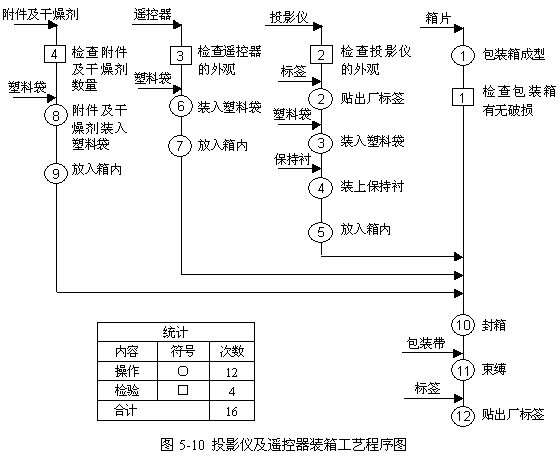

工艺程序图实例分析
例如：生产如图5-8所示的一个传动轴组件，该组件由轴、齿轮、套筒、键四种零件所组成，各零件的工艺过程如表5-1所示，绘出该组件的工序程序图。
表5-1 传动轴组件各零件的工艺过程
|
轴 材料40Cr，棒料φ |
|
|
加工1 |
在车床上，车端面、外圆、打顶尖孔(0.25h) |
|
加工2 |
在车床上，调头车另一端面，外圆、打顶尖孔(0.16h) |
|
加工3 |
在车床上，精车外圆(0.25h) |
|
加工4 |
在铣床上，铣键槽(0.08h) |
|
加工5 |
钳工台上，去毛刺(0.03h) |
|
加工6 |
调质 |
|
加工7 |
在外圆磨床上，磨外圆(0.08h) |
|
检查1 |
检查尺寸及表面粗糙度 |
|
平键 外购件 |
|
|
加工8 |
平键装入轴上，(0.002h) |
|
齿轮 材料45钢(M=3.5，Z=66) |
|
|
加工9 |
锻造 |
|
加工10 |
正火 |
|
加工11 |
在转塔车床上，粗车各部(0.25h) |
|
加工12 |
C616上，精车各部(0.16h) |
|
加工13 |
Y38上，滚齿(0.5h) |
|
加工14 |
倒角机上，倒角(0.08h) |
|
加工15 |
插床上，插键槽(0.11h) |
|
加工16 |
钳工台上，去毛刺(0.018h) |
|
加工17 |
Y5714上，剃齿(0.25h) |
|
加工18 |
M220上，磨内圆(0.16h) |
|
加工19 |
Y5714上，珩齿(0.25h) |
|
检查2 |
检查是否达规定的技术要求 |
|
加工20 |
齿轮装入轴上(0.008h) |
|
套筒 外购件 |
|
|
加工21 |
套筒装入轴上(0.002h) |
|
检查3 |
最终检查 |
根据给定的加工工艺，绘出的传动轴组件的工艺程序如图5-9所示。图中圆圈内的数字表示加工或检验的序号，圆圈左边的数字表示该工序的单件工时定额。

图5-9 传动轴组件的工艺程序图
根据传动轴组件工艺程序图，运用“5W1H”和“ECRS”技术进行分析，其分析过程如下：
问：是否需要对40Crφ
答：需要
问：能否合并？
答：能合并到一个工序中，通过不同工步来完成。现行方法已经合并在一个工序中了。
问：能否简化？
答：不能。因为，每个工步完成的是不同的加工部位，不能简化。
采用同样的方法，对程序图中每个工序进行提问，若发现再也没有比这更好的方法时，就将该工艺程序固定下采，以便后面进行作业分析和动作分析。
例如：根据给定的资料对投影仪以及遥控器装箱的工艺程序进行分析。
投影仪以及遥控器的装箱工艺程序如下：
（1）箱片：包装箱成型→检查包装箱有无破损
（2）投影仪：检查投影仪的外观→贴出厂标签→装入塑料袋→装上保持衬→放入箱内
（3）遥控器：检查遥控器的外观→装入塑料袋→放入箱内
（4）附件及干燥剂：检查附件及干燥剂数量→附件及干燥剂装入塑料袋→放入箱内
（5）封箱→束缚→贴出厂标签。
投影仪以及遥控器装箱的工艺程序分析如下：
1．投影仪以及遥控器装箱工艺程序如图5-10所示。

2．现状分析
根据图5-10的统计结果，发现投影仪及遥控器装箱共有12次加工、4次检查。运用“5W1H”技术和“ECRS”四大原则进行分析。首先，看能否有可取消的工序，其次，看能否将工序进行合并或重排(C、R)，再次，看能否将工序简化(S)，最后，看能否使工艺过程更好。具体分析过程如表5-2所示。
表5-2 投影仪及遥控器装箱工艺程序分析
|
箱子成型能否取消 |
不能 |
|
检查箱子破损能否取消 |
不能 |
|
检查箱子破损与箱子成型能合并吗 |
能 |
|
检查投影仪外观能取消吗 |
不能 |
|
贴出厂标签能取消吗 |
不能 |
|
检查投影仪外观与贴出厂标签能合并吗 |
能 |
|
投影仪装入塑料袋、装上保持衬能取消吗 |
不能 |
|
检查遥控器外观、将遥控器装入塑料袋内、再放人纸箱内能取消吗 |
不能 |
|
检查遥控器外观与遥控器装入塑料袋能合并吗 |
能 |
|
检查附件及干燥剂数量并装入塑料袋内能取消吗 |
不能 |
|
检查附件及干燥剂数量并装入塑料袋内能合并吗 |
能 |
3．改进方案
通过表5-2的提问分析，发现上述工序均不能取消，但可以通过工序合并，达到优化的目的。改进后投影仪及遥控器装箱工艺程序如图5-11所示。
4．改进效果
通过合并加工与检验工序，使总加工次数由原来的16次减少为现在的12次，缩短了加工时间。
例如：国内某厂电子枪生产线的工艺程序进行分析。图5-12为电子枪装配图。
电子枪装配的工艺程序分析如下：
1．画电子枪生产线改进前的工艺程序图
图5-13是电子枪生产线改进前的工艺程序图。图中真实地记录了生产线的供料点、供料规格和用量、时间、人员配备及电子枪生产线的概况和各作业之间的相互关系。从而可对整个生产线的现状有所了解，为工艺程序图的分析提供了必要的资料和依据。
2．运用“5W1H”技术和“ECRS”原则考查分析，进行改进
根据程序分析的分析技巧，当分析到0-8点数排列透镜时，发现了问题：
问：该工序完成了什么工作?
答：在透镜装配、检验后，由一个操作者进行了4小时的排列工作。
问：这样的工作有必要吗?
答：引进的生产线就是这样安排的。经过对整个生产线分析。在0-9工序时还要对透镜进行清洗，将排好的顺序又给打乱，很显然，该工序是无用的，应取消。
当生产进行到0-18工序装灯丝焊接芯柱时，由于灯丝装入透镜后，0-20，0-21工序又要进行焊尾丝、焊A1边线0-22工序又要焊弹簧片，由于电火花不可避免地造成部分灯丝损坏，废品率高达12%左右，经检验不合格，又将损坏灯丝取下重新装入新灯丝，故采用“ECRS”四大原则，将整个工艺程序图进行改进。0-18工序分成两个工作，将装灯丝工序排至最后。
3．画生产线改进后的工艺程序图
改进后的电子枪装配工艺过程图如图5-14所示。通过采用工艺程序图的程序分析，大大节省了人力和财力，节省资金达19.56万元/年，工时540小时。
图5-13 电子枪生产线改进前的工艺程序图
图5-14 电子枪生产线改进后的工艺程序图